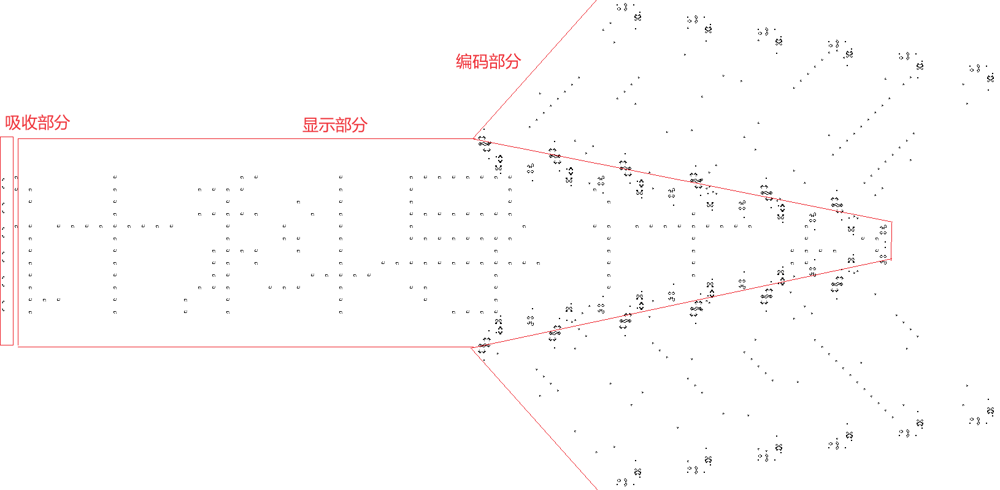

在康威生命游戏中显示“计科导”
原理简介
康威生命游戏是英国数学家约翰·何顿·康威在1970年发明的元胞自动机。其模拟一个二维正方形网格，每个单元格代表一个或生或死的细胞。具体规则如下：
- 当前细胞存活时，若周围存活细胞小于2个，该细胞死亡。
- 当前细胞存活时，若周围有2个或3个活细胞，该细胞保持存活。
- 当前细胞存活时，若周围活细胞大于3个，该细胞死亡。
- 当前细胞死亡时，若周围恰好有3个活细胞，该细胞变为存活。
基于以上原理，我们便可以在康威生命游戏中构造出多种多样的结构，其中，较为有序的结构可分为以下三类：稳定结构、震荡结构、飞船结构。
稳定结构是不会随着迭代而变化的结构，例如：
震荡结构具有一定的周期性，且在迭代一个周期后回到最开始的结构。以下是一些震荡结构：左侧的三个结构周期均为2，右侧的结构（通常被称为“脉冲星”）周期为3。
飞船结构也具有周期性，但不同的是在一个周期过后它会向一个特定方向平移一段距离。最简单的飞船结构被称为“滑翔机”，如左侧上方所示，周期为4，沿对角线方向平移。另一种被称为“轻型飞船”，如左侧下方所示，周期也为4，水平或竖直平移。值得一提的是，右侧的两个结构被称为“吞噬者”，可以吸收许多不同的结构，并最终恢复初始状态。
根据以上讨论，我们可以分析“计科导显示器”的结构了。如图所示，整个显示器可分为三个部分：
在编码部分中，我们采取“滑翔机”作为存储编码数据的介质，同时在两端设置换向结构使其可以呈环形连续运动。在这个部分我们储存了“计科导”这三个字在每一个像素位置上的具体信息。
显示部分负责具体的显示内容。可以发现，每一个具体的像素都是一架我们刚才提到的“轻型飞船”。在显示部分与编码部分结合的区域我们设置了相应的转换结构：如果接收到一架“滑翔机”，就产生一架“轻型飞船”，并重新产生一架“滑翔机”使得环形存储结构可以持续运行。
最后，吸收部分在与“轻型飞船”接触时可以将它完全吸收，并最终回到原来的稳定状态。